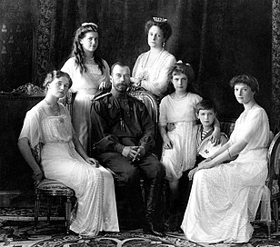

Her History through items
This section summarizes the ten items that were taken into consideration. They were selected according to relevance and heterogeneity criteria in order to provide completeness to the project. They form a complex relationship network with the figure of Anastasija Romanov at its centre. For each item, essential metadata, a short description, and a reference link are provided.

Article Abstract
Alexithymia is a sub-clinical construct, traditionally characterized by difficulties identifying and describing one's own emotions. Despite the clear need for interoception (interpreting physical signals from the body) when identifying one's own emotions, little research has focused on the selectivity of this impairment. While it was originally assumed that the interoceptive deficit in alexithymia is specific to emotion, recent evidence suggests that alexithymia may also be associated with difficulties perceiving some non-affective interoceptive signals, such as one's heart rate. […] In order to determine whether alexithymia is associated with selectively impaired affective interoception, or general interoceptive impairment, we investigated the association between alexithymia and self-reported non-affective interoceptive ability, and the extent to which individuals perceive similarity between affective and non-affective states (both measured using questionnaires developed for the purpose of the current study)[…].
[Figure: Brain areas showing decreased gray matter volume in alexithymia, from Structure of the alexithymic brain.]
The 2nd item: A family portrait
In this picture, taken in 1914, Anastasia is surrounded by her family. We can recognize the Czarevitch Alexis, who is hugged by Anastasia, the Czar and the Czarina,the Grand Duchess Olga, the Grand Duchess Tatiana and the Grand Duchess Marie.
The 3rd item: Drifters, a historical manga
Drifters is a Japanese manga series written and illustrated by Kouta Hirano. It centers on various historical figures summoned to an unknown world where their skills are needed by magicians in order to save their world from total destruction. Among the characters there is also Anastasia Nikolaevna Romanova, represented as a busty and slender young woman with pale white skin and drooping eyes, who is able to create supernatural blizzards.
Knowledge Organization
A gradual process of mapping, abstraction and analysis was made upon the domain of study. After a first representation through a Conceptual Map and an E/R Model, the Metadata Standards used by the different institutions to describe the items were analysed and aligned. The last two steps of the Knowledge Organization of Anastasija RomanLOD were the creation of a Theoretical Model, to expand the relationships already highlighted, to create new links between our items and others, and to add more information, and its formalization through predicates from already existing schemas, vocabularies and ontologies, i.e. the Conceptual Model. We created all the following graphs with diagrams.net (formerly draw.io), a free online diagram software, very intuitive and easy to use.

Conceptual Map
So to start with our Knowledge Organization process, we represented our domain scenario and the ten selected items through a Conceptual Map. Anastasjia Romanov is the centre of our project, and she appears also as the centre of a complex net, to which various rays are connected. Each ray brings to a particular object somehow connected to the Grand Duchess; at this stage we tried also to highlight some crucial people, places and events that make our entities interconnected with each other.

E/R Model
A second step was the abstraction of the conceptual map through a formalization, i.e. an Entity-Relationships Model (E/R Model). This represents the first shift from the specific real data as extracted from the chosen items to the abstract entities that characterize the scenario.

Metadata Analysis and Metadata Alignment
In the following section we have analysed metadata from the institutions keeping our items and we have then aligned our relationships with the relevant standards for our items.
Metadata Analysis
We have produced this metadata analyisis starting from the standards used by the institutions from which we gained information about the items. When these standards were not specified by the institutions, we have looked up for the most suitable ones in order to describe the objects according to their kind. Information about the specific standards as well as the reasons why we have adopted each of them in this analysis can be read below.
- MARC 21 Format for Bibliographic Data is a standard provided by the Library of Congress for the representation of bibliographic information. It has been used by Archive.org for the description of the digitized version of the historical book about the Russian Revolution which we have included in our collection of items.
- ISBD (International Standard Bibliographic Description) has been produced by the IFLA with the aim of standardizing the bibliographic description at an international level. It is composed of nine areas of descriptions, most of which (including the ISBN identifier) are present in the metadata description provided by WorldCat for the two books about Anastasia which we have selected and the manga.
- VRA Core is a standard for the description of works of visual culture and images hosted by the Library of Congress together with the Visual Resources Association. We have chosen it for describing the 3D model representing the facial reconstruction of Anastasia.
- Schema.org is a community-produced schema for describing data on the web founded by Google, Microsoft, Yahoo and Yandex. It is a wide shared vocabulary which makes it possible to describe many different cultural objects. It contains appropriate schemas for dealing with the cinematographic as well as the musical art. Therefore, it has been considered appropriate in our project for describing the films about Anastasia and the song “Once upon a December”.
- MODS (Metadata Object Description Schema) can be used for many purposes among which the most common one is that of describing bibliographic elements. It is the standard used by the Library of Congress for describing the photo of the royal family we have included in our project.
- EAD (Encoded Archival Description) is an XML standard for encoding archival finding aids, maintained by the Society of American Archivists in partnership with the Library of Congress. We have considered it suitable for describing Anastasia’s handwritten letter to her cousin.
Metadata Alignment
The table below shows the result of an alignment and matching of the metadata elements and properties useful to address information related to the items selected for our project. The aim of the task is to reach a high degree of interoperability of data and, because of this, using the Dublin Core standard as the reference for the alignment, we decided to add other standards to the ones found during the metadata analysis. In particular, we added FRBRoo and CIDOC/CRM:
- The CIDOC Conceptual Reference Model (CRM) provides an extensible ontology for information in cultural heritage and museum documentation, and it is the international standard for the controlled exchange of cultural heritage information. In 1994 the work focused on developing an entity-relationship model for museum information, but, in 1996, the approach shifted to object-oriented modelling methodologies, resulting in the first version of the CIDOC CRM in 1999. The process of standardizing this standard ended in 2006 with its acceptance as the ISO 21127 standard;
- FRBRoo ("FRBR-object oriented") is the result of a joint effort, begun in 2006, of the CIDOC Conceptual Reference Model and Functional Requirements for Bibliographic Records (FRBR) to express the IFLA FRBR reference model with the concepts, tools, mechanisms, and notation conventions provided by the CIDOC CRM, and to align the two object-oriented models. FRBRoo was born with the aim to facilitate the integration, mediation, and interchange of bibliographic and museum information.
After the investigation of the different metadata standards, we identified four main categories of data used to describe the items:
- WHO -> Metadata related to individuals or institutions;
- WHERE -> Metadata related to geographical locations;
- WHEN -> Metadata related to dates;
- WHAT -> Metadata related to the form and the content of the items.
Theoretical Model
After having observed the ten items and their connections with one another and with external resources, we have produced our interpretation of the data concerning them. Therefore, for each item, we have searched for further information useful to enrich its description. Our search activity involved people, places, dates and subjects related to the considered cultural objects. We have found additional relevant data about:
- some people, like Anastasia’s cousin or an actress performing in one of the films
- spatial and temporal information, like the place and date of discovery of the skulls of the Romanovs, one of which has inspired the 3d model item
- additional connections between our items, some of which are based on other ones included in our collection.
- external resources , e.g. sources of inspiration for the production of the cultural objects or, vice versa, cultural objects inspired by our items (e.g. the anime based on the manga).
This research allowed us to enrich the Entity-Relation model that we had previously created with new entities and relationships.

The Conceptual Model: a formal representation
At this point, we have enlarged our focus at the formal level of representation exploiting the powerful tool of the ontologies. We have looked for the most appropriate schemas, vocabularies and ontologies for matching the terms previously used for describing our entities and properties in natural language. In particular, it can be noticed that:
- Schema.org, thanks to its flexibility and its large number of properties, has been adopted for describing various kinds of objects, including the ones that are not strictly connected with LAM (like songs and movies);
- FaBiO, FRBRoo, MODS and CIDOC CRM have been used for describing textual as well as visual items and the properties related to them;
- DublinCore has been used instead for describing more generic properties and entities like, for example, the dates.
Knowledge Representation
Let’s now turn to the items! The following contents are meant to describe them exploiting the conceptual model that we have previously produced.
Tables
Here it is possible to visualize a table for each of our items. The tables are composed of three columns representing the three components of a triple (subject, predicate and object). Subjects and objects have been expressed in natural language, while predicates have been written using some ontology properties. There is a row for each property related to the item-subject and in every row it is possible to read a triple statement.

RDF Production
In this section, RDF data about some of our items are available. We have decided to create RDF triples referring to four of our items in order to represent four different kinds of objects and their peculiar features. RDF triples have been indeed produced for the film Anastasia (1956), the Photograph Family Portrait, the song Once Upon a December, the book Through the Russian Revolution. The URIs identifying our items have been created by us basing on the format provided on the w3id.org website, but have not been activated. The URIs representing the entities related to each item, together with the prefixes for the chosen ontologies can be read in the boxes below. Links to the same authorities for names (owl:sameAs) have been provided. We have also provided semantic connections between our items and other related cultural elements (for example the play on which the film is based) or historical events (like the Russian Revolution, which is the subject of the book). Partitive associations have been made, for example, between the song and a musical containing it, and other associative connections have been made for people and places. The triples have been written in Turtle format.
RDF production for the film Anastasia (1956)
RDF production for the Photograph Family Portrait
RDF production for the song Once Upon a December
RDF production for the book Through the Russian Revolution
RDF Representation
As a final step for the whole workflow, we have produced a visual representation of the RDF data regarding the four items previously mentioned. It has been created with the RDF Grapher tool. The graph representation begins from the node containing the URI of the Great Duchess Anastasija. The arrows, representing the predicates, link the subjects and objects of the triples.
RDF graphical representation of the following items: the film Anastasia (1956), the Photograph Family Portrait, the song Once Upon a December the book Through the Russian Revolution